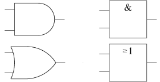

The International tab

This tab allows configuration of Logisim according to regional preferences.
-
Gate shape: Logisim supports two standards for drawing gates: IEC and ANSI. The following table illustrates the distinction.
IEC ANSI AND  OR Because the IEC style tends to be more popular in the U.S., while the ANSI<(i>) style tends to be more popular in Europe, some people refer to these styles according to these regions.
Logisim does not follow any standard exactly; it steers a middle ground to allow switching between them. In particular, the shaped gates are more square than the dimensions defined by the relevant IEEE standard. And, although XOR and XNOR gates really ought to be the same width as OR and NOR gates with the ANSI style, they are not because of difficulties compressing the IEC XOR gate.
-
Language: Change between languages. The current version is supplied with English, Spanish, Russian, and German translations.
- The French translation was introduced partially with Logisim 2.13.22. Produced by Roberto Rigamonti and completed in Logisim 2.14.2 by Marc-André Baillifard Université de Lausanne
- The German translation was introduced with Logisim 2.6.1. It is by Uwe Zimmermann, a faculty member at Uppsala University in Sweden.
- The Greek translation was introduced with Logisim 2.7.0. It is by Thanos Kakarountas, a faculty member at Technological Educational Institute of Ionian Islands in Greece.
- The Italian translation was introduced with Logisim 2.14.7
- The Nederlands translation was introduced with Logisim 3.2.0
- The Portuguese translation was introduced with Logisim 2.6.2. It is by Theldo Cruz Franqueira, a faculty member at Pontifícia Universidade Católica de Minas Gerais in Brazil.
- The Russian translation was introduced with Logisim 2.4.0. It is by Ilia Lilov, from Russia.
- The Spanish translation was complete as of Logisim 2.1.0, but subsequent Logisim versions have added new options that remain untranslated. It was contributed by Pablo Leal Ramos, from Spain.
Due to the changes, not all translations are at the same level and there is still a lot to be translated and corrected. Logisim translations and documentation are welcome! If you are interested, please contact github.com/reds-heig/logisim-evolution. This will not be a commitment: I will be happy to hear of your interest, and I will tell you whether I know of somebody who is working on it already, prepare a version for you to work with, and send you instructions. The translation process does not require an understanding of Java.
-
Replace accented characters: Some platforms have poor support for characters (such as ñ or ö) that do not appear in the 7-bit ASCII character set. When this is checked, Logisim will replace all instances of the characters with the appropriate equivalent 7-bit ASCII characters. The checkbox is disabled when the current language does not have any equivalents available (as with English).
Next: The Window tab.